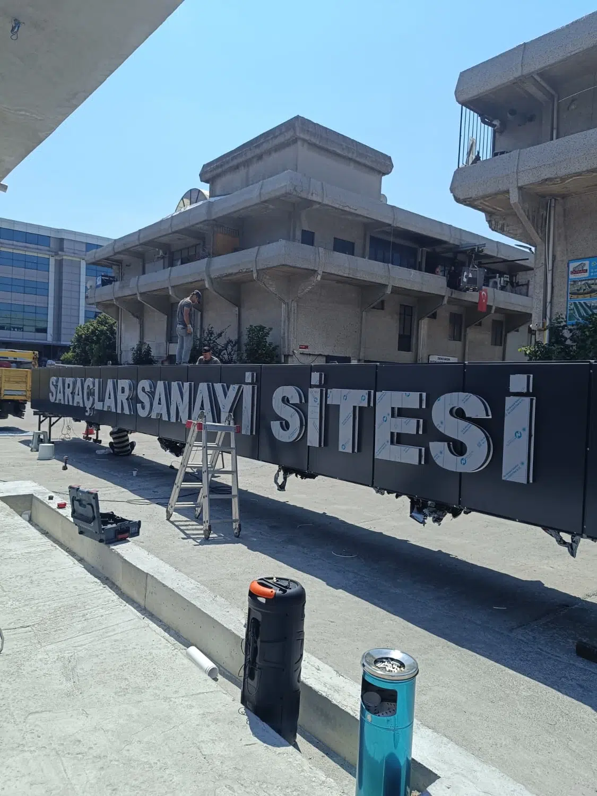

Totem Tabela ve Yönlendirme Sistemleri
Totem tabela ve yönlendirme panoları, iş yerinizi uzaktan görünür kılmak veya ziyaretçilerin doğru girişe ulaşmasını sağlamak için planlanır.
Fiyat paylaşımı sitede yapılmaz. Ölçü ve ihtiyacınıza göre size özel teklif hazırlanır.

Gerçek proje fotoğrafıProjenize uygun çözümü birlikte belirleyelim.
Ürün türünü henüz bilmiyorsanız ölçüyü, kullanılacak alanı ve beklentinizi yazmanız yeterlidir.
Totem ve yönlendirme tabelası nerelerde kullanılır?
İş merkezleri, sanayi alanları, fabrika girişleri, otoparklar ve site içi alanlarda farklı boyutlarda totem veya yönlendirme panoları kullanılabilir. Tasarım uzaktan okunabilir olmalıdır.
Yükseklik ve zemin neden önemlidir?
Totemin yüksekliği, genişliği, montaj noktası, elektrik ihtiyacı ve zemin yapısı teknik planlamayı etkiler. Yüksek dış mekân uygulamalarında taşıyıcı sistem ve gerekli izinler ayrıca değerlendirilmelidir.
Projenizi nasıl tarif edebilirsiniz?
Yaklaşık boyut, yerleşim alanının fotoğrafı, kaç yönden okunacağı ve aydınlatma tercihi bilgileriyle teklif formunu doldurabilirsiniz.
Uygulama fotoğraflarımız
Bu fotoğraflar projelerimiz sayfasındaki çalışmalarımızdan seçilmiştir.


Teklif vermeden önce bilmek isteyebilecekleriniz
Kesin fiyat; ölçü, malzeme, adet ve işin kapsamı görüldükten sonra belirlenir.
Totem tabela ışıklı olabilir mi?
Evet. İhtiyaca ve uygulama alanına göre ışıklı veya ışıksız seçenekler değerlendirilebilir.
Yönlendirme panosu ile totem aynı şey mi?
Totem dikey bir yapı olabilir; yönlendirme panosu ise kullanıcıyı belirli bir konuma yönelten farklı türde levha ve sistemleri de kapsar.
Kurulum yeri neden soruluyor?
Montaj yüzeyi, erişim koşulları ve olası altyapı gereksinimleri maliyeti etkiler.
Projenizi anlatın, birlikte netleştirelim.
Ölçü, malzeme ve montaj bilgilerini seçin; talebinizi WhatsApp'tan doğrudan bize iletin.